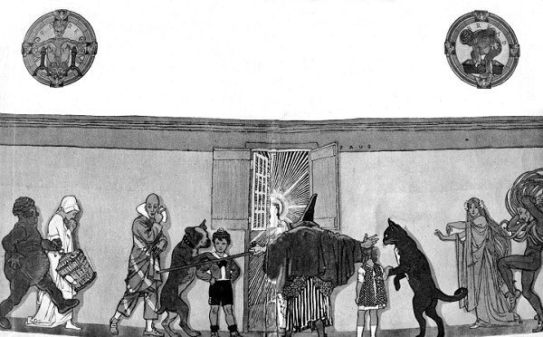

Nội dung thủ bút:
Có lẽ mình phải đóng một cái khung để giữ bốn câu thơ cậu tặng mình.
Có bằng nói láo bốn mươi năm, Vũ ấy sao mà giọng vẫn căm Hay tại đa ngôn đa báo hại, Giường tiên trời phạt chẳng cho nằm!
Sài Gòn, 21-12-1969
Vũ Bằng
Vũ Bằng: Làm báo, viết văn. Sinh ngày: 3-6-1913 tại Hà Nội
Tác phẩm: Một mình trong đêm tối (tiểu thuyết) Trung Bắc tân văn (Hà Nội) xuất bản 1937, Chuyện hai người (tiểu thuyết) Tân Dân (Hà Nội) xuất bản 1940, Tội ác và hối hận (tiểu thuyết) Phổ thông Bán nguyệt san (Hà Nội) xuất bản 1940, Để cho chàng khỏi khổ (tiểu thuyết) Phổ thông Bán nguyệt san (Hà Nội) xuất bản 1941, Khảo về tiểu thuyết (loại sách “Học và Hiểu”) Phạm Văn Tươi (Sài Gòn) xuất bản 1955, Miếng ngon Hà Nội (tạp văn) Nam Chi Tùng Thư xuất bản 1960, Phù dung ơi! Vĩnh biệt! (Thế Giới xuất bản) 1969 (tức tác phẩm Cai, Tân Dân xuất bản tại Hà Nội) 1942, 40 năm nói láo (Cơ sở xuất bản Phạm Quang Khai) 1969
Vũ Bằng Người trở về từ cõi đam mê
Vũ Bằng là một hiện tượng. Trong suốt dòng sông của cuộc đời có mặt, Vũ Bằng đã đánh đổi tất cả chỉ để xin lấy về phần mình hơi thở của nghệ thuật. Nghệ thuật làm báo cũng như viết văn. Về làm báo, Vũ Bằng đã tự vẽ chân dung mình, chân dung thế hệ, trong cuốn 40 năm nói láo do cơ sở xuất bản Phạm Quang Khai ấn hành cuối năm 1969. Trong tác phẩm đó, Vũ Bằng đã thành thực chẳng những với lòng mình mà còn với người đọc. Những điều mà Vũ Bằng viết ra tôi tin rằng chẳng có ích bao nhiêu đối với những người chưa hoặc không nghĩ tới chuyện làm báo, nhưng nó rất cần thiết cho lịch sử báo chí và những ai muốn sống đời ký giả. Bán cả một cuộc đời để được trả bằng mấy trăm trang sách kể là quá đắt. Cuốn hồi ký 40 năm nói láo đã nói lên tất cả mọi khía cạnh đặc thù – trong đó – Vũ Bằng đã ký thác tâm sự mình, ký thác “nghiệp chướng” mình một cách quá đầy đủ về mặt báo chí, nên ở bài này, tôi chỉ viết về “Vũ Bằng nhà văn”.
Cách đây từ 40 năm, Lãng Nhân đã tìm thấy Vũ Bằng trong một bài lai cảo gửi cho báo Đông Tây và được đăng vào mục Bút Mới cũng như ngày nay một vài tờ báo hay tạp chí mở mục “Cây viết mới”, “Tài năng mới”, “Mầm non văn nghệ” v.v… Tôi tin rằng khi Lãng Nhân, với tư cách chủ bút báo Đông Tây chọn văn của Vũ Bằng, hẳn đã có con mắt tinh đời, cũng như Vũ Bằng, một thanh niên chưa đến 20 tuổi, đang học “sơ-gông” ở “Lýt-xê” không ngờ cánh cửa đời văn của mình lại do “một người mặt lạnh như tiền” mở cho vào một cách thong thả.
Nghề văn đối với Vũ Bằng là một cái nghiệp. Chính vì say mê đời văn, Vũ Bằng đã dìm những tháng, những năm của tuổi trẻ vào đam mê, vào sa đoạ làm vỡ nát một ước của bà mẹ muốn cho con học thành bác sĩ, và làm khổ lây đến người cô già lận đận suốt đời cô độc bên cạnh đứa cháu hư, bị gia đình ghét bỏ. Cũng may, vì tình thương vô lượng của người cô khả kính đó – mẫu người đàn bà Việt Nam cổ – mà thay vì Vũ Bằng chôn sâu thân thế và sự nghiệp văn chương vào sợi khói phù dung với muôn vàn cơ luỵ có thể đi đến tuyệt vọng cả thể xác lẫn linh hồn, Vũ Bằng đã “kinh qua” hệ luỵ nhục nhằn một cách dũng cảm so với khả năng chịu đựng của một con người.
Đã 40 năm qua, biết bao nhiêu hưng phế, có bao nhiêu giá trị bị mất đi, được bao nhiêu con người còn hiện diện để chứng minh với lịch sử văn học, với thời gian, cái ý chí sắt son của kẻ nghệ sĩ dám sống chết với nghệ thuật? Vũ Bằng, một nhà văn lớn trong số các nhà văn tiền chiến và ngay cả bây giờ. Vũ Bằng viết văn với một phong thái riêng, thật riêng biệt. Những truyện của Vũ Bằng đã đăng trong Tiểu thuyết thứ bảy khi Vũ Quân còn là chủ bút, đều mang nội dung mới, đi đôi với lời văn ngắn, gọn, sắc. Trong lúc đó, đa số độc giả còn mê đọc lối văn bay bướm của Ngọc Giao, hay nhẹ nhàng của Thanh Châu, hoặc “người hùng” của Lê Văn Trương v.v…
Cần phải nói thẳng, hồi đó Vũ Bằng chịu ảnh hưởng kỹ thuật hành văn của tác giả Tây phương nói chung. Nhưng điểm đáng quý ở Vũ Bằng, là không bao giờ áp dụng tư tưởng Tây phương vào sáng tác của mình, trừ kỹ thuật. Từ cuốn Một mình trong đêm tối qua Chuyện hai người đến Ba chuyện mổ bụng và Bèo nước là tác phẩm được in thành sách trước lúc toàn quốc kháng chiến, tất cả đều có nội dung rất giản dị, giản dị đến nỗi người đọc cảm thấy không có cốt chuyện mà chỉ có lời văn với nhân vật “trình diện” độc giả qua ngôn ngữ và hành động hết sức đặc thù, hết sức Vũ Bằng.
Lối dựng truyện của Vũ Bằng cách đây trên 30 năm làm nhiều người bỡ ngỡ vì không ngờ, nó “chẳng có gì” cho ta thắc mắc hay có thể tìm thấy chút ít tâm sự mình qua nội dung tác phẩm. Đại loại “nó” như thế này.
a. Truyện tả một người say rượu rơi xuống hố, kêu gọi không ai cứu cả. Hắn đứng một lát, sau nhớ rằng hố không sâu, bèn trèo lên đi về nhà… (Một người rơi xuống hố)
b. Một người đàn bà có cái áo mới. Người đàn ông hàng xóm sang xem, sờ vào. Không ai nghi ngờ. Nhưng vì người đàn ông sợ chồng người đàn bà có áo mới giận, sang xin lỗi… (Chuyện hai người)
c. Một người thư ký mê gái, ăn cắp tiền của chủ đi đánh bạc được, lại đem tiền hoàn lại cho chủ v.v…
Đó, cái phong cách sáng tạo của Vũ Bằng trong suốt như vậy và nhiều lúc tưởng không thành truyện, nghĩa là không phải tiểu thuyết vì có vẻ “dễ” quá. Xin ai đừng hiểu lầm mà tội nghiệp, vì nền tiểu thuyết bây giờ chẳng những không có truyện mà đôi khi còn không phân định cả vai trò nhân vật của tiểu thuyết nữa. Chẳng hạn như tác phẩm của Yves Berger, Claude Simon hoặc Samuel Beckett. Vì lý do đó, người ta có thể nghĩ rằng, Vũ Bằng là nhà văn Việt Nam thứ nhất đã có cái nhìn xa để vươn tới sự hoà đồng tiến bộ trong địa hạt tiểu thuyết từ mấy chục năm trước.
Vũ Bằng“vào nghề” với sự “tìm khôn” một mình. Qua bao nhiêu ngày tháng lăn lóc với bút mực, Vũ Bằng muốn đem chút vốn liếng riêng tư để làm của chung thiên hạ. Nghề văn ở nước Việt Nam không ai dạy ai cả. Chỉ có nghề dạy nghề. Vũ Bằng muốn giúp ích cho những người đi sau tránh được một phần cực nhọc khi bước chân vào “nghiệp”. Vũ Bằng đem cái “đọc” và cái “hiểu” của mình viết thành sách. Cuốn Khảo về tiểu thuyết xuất bản tại Sài Gòn năm 1954, thực ra, đã được đăng tải từng kỳ tại báo Trung Bắc chủ nhật từ năm 1941-42. Nói cho đúng, cuốn Khảo về tiểu thuyết, không phải là sách gối đầu giường của những chàng tuổi trẻ muốn trở thành nhà văn ngày mai, vì nội dung tập sách đề cập tới nhiều vấn đề quá, mà không vấn đề nào đi sâu vào chi tiết, để cho người đọc có thể nghiên cứu và tìm hiểu rộng rãi phần chuyên môn đến nơi đến chốn. Nhưng chẳng phải vì thế mà nó không mang theo những giá trị hiển nhiên xuyên qua 170 trang sách với các phần trọng yếu nhất của nghề viết văn:
“Về loại văn tiểu thuyết… người viết truyện không có trường, không có thầy mà văn tiểu thuyết của ta được đến địa vị ngày nay kể đã là một sự đáng mừng. Duy chỉ đáng phàn nàn, văn tiểu thuyết của ta bắt chước của Âu, mà những người theo Âu Tây chưa từng có viết qua một quyển sách nào nói về tiểu thuyết để cho những người học cũ biết qua cái loại văn mới đó và giúp những người viết truyện ít học hay không có sách Tây đọc biết thế nào là quyển tiểu thuyết, kết cấu một cuốn tiểu thuyết, nhân vật trong một cuốn tiểu thuyết…” (Khảo về tiểu thuyết, trang 15)
Bởi quan niệm một cách rõ ràng như trên, nên Vũ Bằng mới có can đảm ghi nhận lấy những nhân tố quan trọng một trình bày khúc chiết về một vấn đề thật rộng lớn trong phạm vi nhỏ hẹp hơn trăm trang sách.
Ở Chương III của tập sách, Vũ Bằng thử “phân loại” tiểu thuyết:
“Tiểu thuyết chia làm mấy loại? Ta cũng nên tìm biết. Người mình thường không phân biệt chữ ‘thể’ văn tiểu thuyết với ‘loại’ văn tiểu thuyết.
Theo tôi có hơn một chục thể văn tiểu thuyết khác nhau, nhưng kể về loại tiểu thuyết, chỉ có hai loại: một loại truyện ‘làm cho ta quên cõi đời này đi’ có thể gọi là truyện ‘quái đản bất kinh’ và một loại truyện ‘giảng cho ta cõi đời này’ ra thế nào, có thể gọi là truyện ‘gần đời thiết thực’.” (Khảo về tiểu thuyết, trang 21)
Việc phân loại trên, người đọc nhận thấy, có lẽ Vũ Bằng căn cứ vào sự hiểu biết của riêng mình và do nghề nghiệp nhiều hơn là ý nghĩa thực tế mà cuộc đời đã tạm thời coi như có giá trị, vì cho đến hôm nay chưa ai xác định được rõ ràng về hai chữ tiểu thuyết.
Vậy tiểu thuyết là gì, có mấy loại?
Theo Tự điển Larousse du XXe Siècle thì tiểu thuyết là một tác phẩm tưởng tượng, được kể lại thành văn với sự phiêu lưu tưởng tượng sáng chế ra và phối hợp để gây sự chú ý cho người đọc”. (Roman, œuvre d’imagination, récit en prose d’aventures imaginaires inventées et combinées pour intéresser le lecteur). Nếu theo đúng nghĩa trên, tiểu thuyết chỉ có một loại thôi, vì dù là truyện “quái đản bất kinh”, dù là “gần cõi đời thiết thực”, người sáng tác vẫn phải phóng hồn mình để tìm hiểu, để tưởng tượng, sáng chế và phối hợp với đầy đủ mọi yếu tố quan trọng lồng trong một khung cảnh, một bố cục “quái đản” hay “gần đời” để gây sự cảm thông, và “bắc cầu liên hệ” giữa tác giả – độc giả trong không khí nghệ thuật, cho quên “cõi đời ô trọc” này đi được phút nào hay phút ấy.
Trong cuốn Khảo về tiểu thuyết, Vũ Bằng đã làm việc hết sức cẩn thận và đề cập một cách có hệ thống diễn tiến của từng mục trong 16 chương, từ: “Mới, mới luôn luôn”, “Viết truyện gì?”, “Truyện quái đản bất kinh”, “Chủ đề với truyện”, “Tiểu thuyết mới!”, “Tiểu thuyết với thuật tả chân”, “Một nhân vật sống”, “Thuật tả chân ngôn ngữ”, “Thuật tả chân tư tưởng”, “Tiểu thuyết nên viết bằng giọng văn gì?”, “Nhà tiểu thuyết có nên làm văn không?”, “Viết tiểu thuyết nên dùng ngôi thứ mấy?”, “Nghề viết tiểu thuyết” để đi tới một kết luận nhằm xác định thái độ trước vấn đề được đặt ra về phía người viết tiểu thuyết cũng như người đọc tiểu thuyết.
"Sinh ra trong cõi đời vật chất này, văn nhân, thi sĩ, tiểu thuyết gia không còn thể là những ông Tolstoi được nữa, họ cũng phải sống, họ cũng cần phải có tiền, nhưng chúng ta không nên vì thế mà giảm lòng kính họ.
Bao giờ và ở nước nào cũng vậy, địa vị của văn nhân cũng đặc biệt trong một nền văn minh thường thường, cái sứ mệnh của văn nhân cũng được định đoạt rõ rệt bởi chính những sự nhu cầu của người dân. Văn nhân sẽ là, và chính bây giờ cũng đã là một chuyên gia trong một xã hội có toàn những chuyên gia…" (Khảo về tiểu thuyết, trang 165)
"Tuy vậy, cũng nên biết rằng tiểu thuyết sở dĩ gây nên được những ảnh hưởng to, tiểu thuyết đã tạo nên những bóng mây hơi nước khả dĩ nuôi được tâm hồn đất nước, công đó không phải là toàn của những nhà tiểu thuyết đâu, nhưng còn là công của những người đọc tiểu thuyết và những người yêu tiểu thuyết nữa.
Nhà tiểu thuyết viết ra để làm gì? Chúng ta đã biết họ viết bởi vì cần phải viết, nhưng nói như thế chưa đủ, bởi vì viết thì phải xem, mà họ viết thì họ không xem bao giờ. Họ cần viết vì độc giả. Họ đã nghĩ đến các ông, các bà và các cô. Các bạn có biết sự liên quan mật thiết, lạ lùng giữa nhà tiểu thuyết và độc giả ra thế nào không? Một nhà tiểu thuyết đem mình phơi bày ra trong truyện, hạnh phúc của nhà tiểu thuyết là làm cho mọi người đọc trông thấy lý tưởng của mình, gửi tấm lòng mình cho độc giả tất cả những cái kết tinh trong hồn mình, nói tóm lại, tiểu thuyết tin độc giả, cũng như một xử nữ dâng cái trinh tiết cho người yêu vậy.” (Khảo về tiểu thuyết, trang 167)
Đoạn văn thật tha thiết đã nói lên tất cả tâm sự Vũ Bằng, thứ tâm sự vừa kiêu sa, vừa nhún nhường, gói ghém đầy đủ sứ mệnh của người cầm bút và bổn phận người thưởng ngoạn văn chương.
"Hỡi, hỡi vị tinh tú to lớn kia ơi – Zarathoustra vừa tiến lên ngẩng nhìn mặt trời vừa kêu lên như vậy – nếu mi không có những người mà mi soi sáng thì chả biết hạnh phúc của mi sẽ ra thế nào?" (Khảo về tiểu thuyết, trang 168)
Đúng, Zarathoustra đã nói đúng, vì nghệ thuật làm ra mà không có ai hưởng ứng cũng như mặt trời kia soi sáng trên vùng đất chết, không sinh vật, thì nguồn ánh sáng thiêng liêng đó cũng chỉ vô ích. Vũ Bằng chủ trương làm văn nghệ cho con người và chỉ vì ý nghĩ đó, Vũ Quân đã kêu gọi đến các đại văn hào thế giới như Tolstoi, Balzac, Stefan Zweig, A. France, Proust, André Maurois v.v… để chứng minh cho lập luận của riêng mình về vấn đề tiểu thuyết, trong một tập biên khảo khiêm nhượng, rất khiêm nhượng.
Nhưng, đích thực, Vũ Bằng không phải là nhà khảo cứu, trường hợp cuốn Khảo về tiểu thuyết là trường hợp “chẳng đặng đừng”! Cái tài hoa của Vũ Bằng, nó tập trung ở sáng tác. Nó phản ánh trung thực cuộc sống nội tâm của Vũ Bằng. Nó là nỗi xao xuyến thường trực trong các vi-ti tế bào tạo thành sức sống. Nó hiện diện trong mỗi dòng, mỗi chữ. Nó chiếu rọi vào từng góc thầm kín, u uẩn của chiều sâu tâm thức. Nó khơi động lại sự khuất chìm của thời gian vắng mặt. Nó tầm thường như một miếng ăn, thức uống. Và nó cũng vô cùng cao trọng khi sự tầm thường đó được Vũ Bằng nâng lên thành nghệ thuật. Đó là cuốn Miếng ngon Hà Nội do Nam Chi Tùng Thư xuất bản năm 1960. Vũ Bằng viết một phần tại Hà Nội (1952) và sửa chữa, hoàn tất trong thời gian 1956-58 và 59 tại Sài Gòn.
“Vào khoảng năm tàn, tháng hết, ở miền Nam nước Việt có những buổi tối đìu hiu lạnh như mùa Thu đất Bắc.
Gió buồn đuổi lá rụng trên hè. Mây bạc nặng nề trôi đi chầm chậm như chia mối buồn của khách thiên lý tương tư.
Người xa nhà đột nhiên thấy trống trải trong lòng. Lê bước chân trên những nẻo đường xa lạ, y thấy tiếc nhớ một cái gì không mất hẳn, nhưng không còn thấy. Nhớ vẩn vơ, buồn nhè nhẹ. Cái buồn không se sắt, cái nhớ không day dứt, nhưng chính cái buồn và cái nhớ đó mới thực làm cho người ta nhọc mệt, thẫn thờ. Lòng người cũng như cánh hoa, chóng già đi vì thế…”.
Chính cái không gian và thời tiết đã làm Vũ Bằng nhớ tiếc, nhớ tiếc khoảng không gian cũ trong đó Vũ quân đã sinh ra, lớn lên, rồi đi học và trở thành con-người-Vũ-Bằng hôm nay với tất cả những phụ thuộc của kiếp nhân sinh. Cái thú ăn uống cũng làm khổ con người không ít. Sự nhớ nhung quả thực không tốn kém gì, nhưng nó làm ta nghĩ ngợi, tiếc nuối gần như thất bại trước thực tế. Cái nhớ của Vũ Bằng nào có cao xa đâu, nó chỉ là “một chén trà sen do nhà ướp, mấy cái bánh Tô Châu nhấm nháp vào một hôm mát trời, một nồi cơm gạo tám ăn với thịt rim, bát canh cần bốc khói nghi ngút, mấy quả cà Nghệ giòn tan hay mẻ cốm Vòng văn với chuối tiêu trứng cuốc”. Nỗi ước mơ chỉ có thế, thật dễ dàng thực hiện nếu người mơ ước ở một không gian khác, nhưng ở đây, những thứ kể trên có thể coi như vọng tưởng, không thể có món quà thích khẩu, thảng hoặc nếu có, thì tìm đâu ra hoàn cảnh và khí hậu thích hợp cho mỗi thứ vào đúng mùa trời đất luân hành.
Do đó, Vũ Bằng mới khổ, phải viết ra cho đỡ khổ, đỡ nhớ. Tập tạp văn Miếng ngon Hà Nội không đi ra ngoài cái nhớ, cái khổ thật tầm thường mà cũng vô cùng sâu đậm, chẳng những ở Vũ Bằng mà còn ở bao nhiêu con người “mang nặng trong lòng những biệt ly xứ sở” nữa.
Miếng ngon Hà Nội thực ra không đắt, nó chỉ là những món quà bình dân, vì ăn quen nên “khẩu cái” bắt thèm, một cái thèm chỉ làm ứa nước miếng chứ không hành hạ con người như chất ma tuý. Bởi vì, phàm thức quà gì ngon nhất đều “có mặt” ở Hà Nội cả. Nhưng không phải Vũ Bằng chỉ nhớ có quà Hà Nội, mà Vũ quân còn nhớ quê hương miền Bắc nước Việt qua các món quà đó, vì trong hương vị của từng món, hình ảnh một dải đồng bằng phì nhiêu có sáo sậu nhảy trên lưng bò, có người nông phu vạm vỡ, có những cô gái vừa hát vừa quay tơ, làm lòng kẻ “vạn lý tha hương” buồn phiêu phiêu nhìn vào tâm tư để tìm dĩ vãng.
Cứ kể về “ăn chơi”, Vũ Bằng là tay sành sỏi, nếu không, làm sao Vũ quân có thể viết ra và viết rất hấp dẫn đến nỗi đọc đến đâu, bắt thèm đến đó. Từ bát phở bò – món quà căn bản, ăn ở đâu, ăn thế nào cho ngon, nhất nhất Vũ Bằng đều thành thạo.
"Cứ nhìn bát phở không thôi, cũng thú, một nhúm bánh phở, một ít hành hoa thái nhỏ, điểm mấy ngọn rau thơm xanh biêng biếc, mấy miếng ớt mỏng vừa đỏ màu hoa hiên vừa đỏ sẫm như hoa lựu… ba bốn thứ màu sắc đó cho ta được cái cảm giác được ngắm một bức hoạ lập thể của một hoạ sĩ trong phái văn nghệ tiên tiến dùng màu sắc hơi lố lỉnh, hơi bạo quá, nhưng mà đẹp mắt.
Trên tất cả mấy thứ đó, người bán hàng buổi tối mới thái thịt bỏ từng miếng bày lên." (Miếng ngon Hà Nội, trang 21)
Quả thực, đọc văn đã thấy ngon. Vũ Bằng pha trộn thật khéo giữa nghệ thuật viết và nghệ thuật làm phở, đến nỗi người đọc có thể vừa ăn phở vừa đọc mà vẫn cảm thấy cả hai thứ đều “ngon” cả.
Ở đâu có món quà nào, Vũ Bằng đều tìm đến thưởng thức. Nào bánh cuốn Thanh Trì ăn với đậu rán sốt và các thứ phụ thuộc như một chai nước mắm, một chai giấm, một chén ớt khô v.v… Bánh thì thơm, nước mắm vừa độ, không chua quá, không cay quá. Ta chấm chiếc bánh tráng vào trong nước chấm màu hổ phách đưa lên miệng chưa nhai đã tưởng như bánh “chưa đến môi đã trôi đến cổ” mất rồi.
Còn bánh cuốn nhân thịt, Vũ Bằng đưa người đọc xuống phố Lê Lợi – hiệu Ninh Thịnh – để ăn bánh cuốn nguội, thật dẻo và thật mát, ăn dăm ba chiếc, rõ thực là “thần tiên đấy”.
Ngoài ra nào bánh đúc, bánh khoái, bánh Xuân Cầu ăn trong ba ngày Tết cho tiêu bớt chất mỡ của nhân bánh chưng, thịt kho, giò thủ v.v… Bánh Xuân Cầu vuông bằng hai ngón tay và mỏng như giấy bản, có nhiều màu, chiên mỡ cho giòn rồi phết mật lên trên, mà theo Vũ Bằng, ăn bánh Xuân Cầu ta sẽ có cảm giác như đương nghe thấy trong lòng dạo lên một bản nhạc có tiếng đồng chen tiếng sắt.
Nhưng món quà được Vũ Bằng ve vuốt bằng ngôn ngữ trang trọng nhất là món cốm Vòng. Vũ Bằng không nhớ Tết, không nhớ những ngày vui và những tình ái đã qua bằng nhớ mê cốm Vòng ngày nhỏ, mẹ mua cho ăn lót dạ trước khi đi học.
“Không, cốm Vòng quả là một thứ quà đặc biệt nhất trong mọi thứ quà Hà Nội – đặc biệt vì cứ mỗi khi thấy gió vàng hiu hắt trở về thì lại nhớ đến cốm, mà đặc biệt hơn nữa là khắp các ‘nẻo đường đất nước’ chỉ có Hà Nội có cốm thôi.
Có những hình ảnh đẹp quá, thoảng qua trước mắt một giây, mà ta nhớ không bao giờ quên được.
Bây giờ nghĩ lại cái đẹp não nùng của cốm Vòng xanh màu lưu ly để ở bên cạnh những trái hồng trứng thắm mọng như son tàu, tôi thích nhớ lại một buổi chiều đã xa lắm rồi, có một nhà nọ đưa hồng và cốm sang sêu một người em gái tôi.
Trên một cái khay chân quỳ, khảm xà cừ, đặt ở giữa án thư, hai gói cốm bọc trong lá sen được sắp song song, còn hông thì bày trong một cái giá, dưới đệm những lá chuối xanh nõn tước tơi, để ở trên mặt sập."
Vũ Bằng đã vẽ lên những nét sắc sảo với màu sắc chói chang cân đối làm nổi bật đề tài và khích động lòng thèm muốn của kẻ muốn ăn ngon. Vũ Bằng còn cho ta biết cốm ở đâu có và cốm ở đâu ngon quý, cùng cách làm cốm của con trai làng Vòng.
Từ chuyện cốm, đi sang chuyện rươi, món này chỉ có mấy tỉnh miền duyên hải như Hải Dương, Đông Triều, Thái Bình và Kiến An. Rươi là một loài sâu sống ở chân lúa, cuống rạ. Đến mùa, đất vỡ ra, rươi hiện lên trên mặt ruộng. Mỗi mùa rươi xuất hiện theo định kỳ: ngày 5 tháng 9, hai nhăm tháng 10 và tháng 9 đôi mươi, tháng 10 mồng 5 mà thôi. Món này các tay nhậu thích lắm. Cách làm hơi cầu kỳ nhưng vì hiếm nên trở thành quý.
Chẳng phải Vũ Bằng chỉ thích miếng ngon và đắt đâu, có những thứ rẻ rề như ngô rang, khoai lùi, quà bún riêu, bún ốc, bún bung, bún chả cũng được xếp ngang với món gỏi, chả cá, thịt cầy, tiết canh, cháo lòng và sau cùng đến món “hẩu lốn”, tức là những thức ăn dư của ngày Tết đổ “hầm bà lằng” vào nồi đun nóng có gia giảm thêm rau cỏ.
“Ngoài sân, mưa lăn tăn làm ướt giàn thiên lý. Mấy con ngỗng trời, bay tránh rét, buông ở trên màn trời xám màu chì mấy tiếng đìu hiu. Cơm vừa chín tới, ‘hẩu lốn’ lại nóng hổi, bốc khói lên nghi ngút, mà ngồi ăn ở trong một gian phòng ấm cúng với một người vợ má hồng hồng vì mới ở dưới bếp lên, có hoạ là sất phu lắm mới không cảm thấy cái thú sống ở đời!” (Miếng ngon Hà Nội, trang 196)
Sự thực, cuốn Miếng ngon Hà Nội Vũ Bằng chưa nói hết về miếng ăn Hà Nội, còn nhiều thứ và tuỳ theo khẩu vị của từng người, nhưng phải nhận rằng qua những món quà mà Vũ quân nói đến, đều là món quà trứ danh cả. Trước Vũ Bằng, nhà văn Thạch Lam đã nói về quà Hà Nội qua loạt bài đăng ở Ngày nay dưới tựa đề: Hà Nội 36 phố phường. Loạt bài của Thạch Lam cũng hay và tinh tế lắm, nhưng không gợi lên trong lòng người đọc những cảm giác nấn nuối, chua cay vì lúc Thạch Lam viết, người đọc bắt thèm có thể ăn được ngay, còn bây giờ đọc Vũ Bằng, chỉ để “tưởng nhớ suông”. Do vậy, chữ nghĩa của Vũ quân có ma lực hút người đọc đi vào một không gian khác – ở đây - có dĩ vãng với những món quà ăn chơi quen thuộc.
Vũ Bằng là nhà văn không sợ sự thực, dù cho sự thực đó có thể gây ngộ nhận. Chính vì thế nên trong cuốn hồi ký Phù dung ơi! Vĩnh biệt! do nhà Thế Giới xuất bản mới đây, Vũ Bằng đã nói hết về mình với tất cả thành thực và lương tâm của người cầm bút đã gần 60 tuổi trời. Tập hồi ký này trước mang nhan đề Cai in thành sách vào năm 1942, nhưng chính ra, đã được đăng tải từng kỳ trên báo Trung Bắc chủ nhật từ năm 1940. Cuốn này ở trong Nam ít người biết: khi in ra, phương tiện giao thông bị trở ngại vì Nhật chiếm Bắc Việt, phần nữa, khan giấy nên số ấn bản không nhiều.
Vũ Bằng cho tái bản để thoả mãn đòi hỏi của độc giả một phần, còn mục đích chính là mong cảnh tỉnh giới thanh niên nam nữ bằng bài học nha phiến do chính bản thân tác giả đã trả giá khá đắt. Cái tâm sự bi thương ấy, Vũ Bằng đã trải ra trên 300 trang giấy với tất cả nỗi niềm đau đớn, đôi khi tàn bạo trong từng giờ phút đam mê với ác mộng không rời.
Vũ Bằng đã nghiện và nghiện nặng vì một lý do rất đơn giản là đang tuổi thanh niên mà không có lý tưởng để tranh đấu, để nhìn vào cuộc sống với niềm tin yêu. Vũ Bằng bước chân vào văn nghiệp với một thế hệ “đàn anh” sa ngã, truỵ lạc trong những đêm dài ca quán, trong hương khói quê nâu, trong vòng môi ân tình đĩ điếm. Vì muốn tỏ ra mình cũng xứng đáng là tay “tiểu tướng” trong chốn “giang hồ lạc phách” của “trường văn trận bút”, Vũ Bằng, với tự ái tuổi trẻ, lao đời mình vào đam mê để huỷ hoại đời sống và tin rằng mình đã làm một việc đáng làm, không ân hận gì hết, nếu ngày nào đó thân xác mình bị vùi lấp bởi ô nhục thì cũng cứ được đi.
Cái tâm trạng chán đời của lứa tuổi thanh niên những năm 1930-40, nó là mẫu số chung cho bài toán của một dân tộc bị đô hộ. Thêm vào đó, có những chàng trai hoặc con quan, hoặc giàu có, hoặc vì lý do nào đó, như Chu Mậu, Nguyễn Đình Thấu, Dương Thiệu Thanh v.v… từ Pháp trở về mang theo cái văn minh nửa mùa với lề lối ăn chơi “cẩm” như Tây, nào khiêu vũ, nào bar, nào mốt này mốt nọ, hơn nữa, họ nói chuyện toàn bằng tiếng Pháp và chuyên dùng xảo thuật để chim gái làm cho thanh niên đã hư hỏng càng hư hỏng thêm. Ở giữa cái không khí áy, chả riêng gì Vũ Bằng “bị” mà có rất nhiều thanh niên làm văn nghệ “bị”, nhưng họ không có cái can đảm và sự may mắn kinh qua như Vũ quân, cũng chính vì thế, họ chết dập vùi ở một xó xỉnh nào đó, giữa cuộc đời ngàn vạn lối đi vào quên lãng.
Vũ Bằng đã tự biết mình cũng như ảnh hưởng của cuốn Phù dung ơi! Vĩnh biệt! trong đám độc giả trẻ, nên ở bài Dựng, Vũ quân đã nói với họ bằng những lời chân thực nhất:
“Nếu bất ngờ trong các thanh niên, thiếu nữ có người nào cầm xem cuốn sách này, tôi chỉ mong ước một điều là đừng bao giờ nghĩ rằng tôi đem việc cai của tôi ra phóng đại để do đó chứng tỏ thuốc phiện là nguy hiểm. Tôi chỉ mơ ước một điều là đọc xong sách này, họ sẽ thấy rằng họ không phải là những người đơn độc trên con đường đời muôn ngả, trước chiến tranh, cha anh của họ cũng đã mắc bệnh thời đại, u buồn, trống rỗng và đau xót cái đau xót của họ ngày nay."
Vũ Bằng cũng tự coi mình là tên đào ngũ đối với giới nghiện, nhưng tên đào ngũ không phản bội, tuy thoát ra mà vẫn có lòng thương xót anh em. Sự thương xót ở đây, Vũ Bằng không đặt nó vào vị trí tôn ti mà đích thực nó bộc lộ tận đáy lòng kẻ đã vượt chết.
Lần thứ nhất, Vũ Bằng giao duyên với phù dung tiên nữ bằng mười hai điếu thuốc. Vũ quân đã say thực sự và bị nàng tiên nâu hành hạ thể xác đến khốn khổ ở giữa cầu Thê Húc.
“Nửa giờ đi qua, tôi cứ đứng vịn thành cầu mà rỏ dãi xuống hồ. Toàn thân tôi không còn phải bằng da, thịt hay gân, sụn. Nó là một cái gì rỗng mà nhẹ. Bảo là một con búp bê nhựa có lẽ đúng, bởi vì chân tôi như không còn bám được trên mặt đất. Giá lúc đó có một vài ngọn gió to, tôi đến bay lên không mất rồi!”. (Phù dung ơi! Vĩnh biệt! trang 1)
Chất ma tuý đã ngấm vào từng tế bào trong cơ thể của Vũ Bằng làm cho văn nhân chịu cực hình đến nỗi Vũ quân đã thề không hút nữa, thế rồi chỉ vì lòng tự ái của tuổi trẻ, anh lại hút. Lần thứ nhì, thứ ba “nó không sao cả” vì con trai thời đó, không nổi tiếng ăn chơi thì là thằng quých! Do đó, chẳng những Vũ Bằng hút thuốc phiện mà còn uống rượu nữa. Nhưng có điều lạ, sau mỗi cơn say thuốc, Vũ Bằng chỉ gặp toàn ác mộng mà sao Vũ quân vẫn mê được nó để làm khổ mẹ già và nhất là người cô tận tình thương mến cháu, dù đứa cháu hư.
Nhưng ngày người cô già nua và đau khổ đó chết, cũng chính cái chết của một người đã hy sinh hết cả đời mình cho kẻ khác làm Vũ quân hối hận và có ý định cai. Cai đâu phải chuyện dễ vì phù dung tiên tử có muôn vạn phép màu để giữ chặt linh hồn kẻ nào muốn thoát ly khỏi bàn tay sắt bọc nhung. Vũ Bằng đã thực sự nhìn thấy cái nguy khốn của ma tuý, nó làm cho thân xác nửa chết, nửa sống, nó làm cho con người càng lúc càng xuống thấp. Tôi nhớ có một nhà văn Tây phương nào đó đã viết cả một cuốn sách triết lý về thuốc phiện và cho rằng Đức Chúa, Đức Phật, và Phù Dung là ba Đức Tin. Người nào đã trở thành tín đồ khó mà bỏ đạo, Vũ Bằng cố gỡ mà sự thoát ly vẫn còn ở đằng cuối con dốc với rất nhiều chướng ngại vật. Do đấy, trong lúc chờ đợi “kinh qua” Vũ Bằng vẫn hút và hút hăng hơn bao giờ hết.
Cuộc đời có những sự việc thật tình cờ, nếu không do định mệnh an bài sao lại có thể xảy đến được. Như trường hợp Liên Hường, một cô gái miền sông Hương núi Ngự có mái tóc cánh phượng, đầu đội nón bài thơ, chân đi trên cầu Bạch Hồ mà bỗng vì một lý do đặc biệt trôi giạt ra Hà Nội để vướng mắc vào ái tình và hệ luỵ cùng với Vũ Bằng. Mối tình thật đẹp và cũng thật tội lỗi. Liên Hường, người con gái có giọng hò thê thiết, có tâm hồn lãng mạn yêu văn nghệ, thoạt đầu chỉ “xem Vũ Bằng hút” và “thắp thuốc lá cho Vũ Bằng hãm”, dần dà trở thành nghiện hút.
Chao ôi!
Biển rộng âm thầm
Thấy trời sâu mù mịt
Bốn bề sóng vỗ
Tứ phía mây giăng
Đó có thương đây nhờ sợi xích thằng
Nhất tâm như thiết thạch, chớ có cợt gió trêu trăng tôi buồn…
Từ dưới nhà, trong cảnh mưa đêm lai rai, một tiếng hò nổi lên:
Thuyền chìm đáy nước
Con cá lừng đừng lặn lội
Ngẩng mặt trông trời
Nhạn ngẩn ngơ sa
Ví dầu thiếp có đắm nguyệt say hoa
Có ông trời cao soi xét, anh chớ thiết tha mà đau lòng.
Tri kỷ phương trời… Hai con đò nát gặp nhau… Mặc cho trời cứ đổ…
Thế là xong, bàn tay định mệnh đã thắt mối cuối cùng để ràng buộc hai kiếp người chung số phận. Phù dung và nhan sắc đã dìm đời Vũ Bằng chìm sâu nữa vào quê nâu hương khói. Tương lai, tương lai là của kẻ khác, đối với Vũ Bằng trong thời gian đó chỉ có nhan sắc tan vàng nát đá của Liên Hường và Phù dung diễm ảo sương khói vây quanh. Biết bao oan khổ do thuốc phiện gây nên, đã có bao nhiêu người cai thuốc. Ai cai được, ai không và ai còn, ai mất?
Vũ Bằng sau mấy năm “bê bối” thuốc sái luôn luôn bị hình ảnh người cô chập chờn ám ảnh hoài trong tiềm thức làm nhức nhối đời sống. Vũ Bằng quyết định phải cai. Vũ Bằng cai thực. Sự chia tay giữa Vũ Bằng với nguồn thương nhớ Phù dung tiên nữ quả thực có đau đớn, day dứt. Vũ quân uống thuốc cai rồi thả cuộc đời vào đam mê đàn bà và rượu, mong tìm quên trong vui mới. Không được, không thể nào được vì thuốc phiện có ma. Đôi lúc giận quá, Vũ Bằng đã oán trách ông Trời sao lại cho mình gặp Liên Hường, nếu không có nhan sắc ấy thì đâu đến nỗi nào. Nhưng người oán trách ở đây, đích thực phải là Liên Hường mới đúng, vì sau này nàng nghiện hút không sao bỏ được, chính tại Vũ Bằng.
Rồi thời gian cứ đẩy đưa từng nhịp, sau cùng dồn Vũ Bằng đến đoạn chót của quyết định: Cai. Vũ Bằng tự nhủ: “Ta sẽ can đảm. Ta sẽ can đảm”. Lần này Vũ Bằng can đảm thực sự. Vũ quân đã chọn đúng ngày Tết để cai thuốc phiện. Trong căn phòng nhà thương trắng lạnh với những “ma-lát” và các thứ bệnh khác nhau, bệnh nào cũng ghê gớm cả. Vũ Bằng đã chịu đựng một cách can đảm sự hành hạ hung hãn của thuốc phiện: nào đau bụng, nào nhức xương, nào đau đầu hàng bao đêm dài như thế. Có lúc sự chịu đựng đã yên, Vũ Bằng toan hút lại nhưng nhờ sự may mắn là không có ai đưa đi, nên lại phải nằm trên giường bệnh để nghe “rõ ràng ở chính trong bụng mình, dưới chỗ mỏ ác, có một tiếng kêu khe khẽ đưa ra. Một tiếng kêu kỳ quái, rùng rợn. Một tiếng kêu như giun như dế. Một tiếng kêu không to lắm nhưng ti tỉ như tiếng ve sầu kêu mùa hè, thê thảm não nùng, rồi kéo dài ra, rồi kéo dài mãi mãi.”
Thật rùng rợn, con ma thuốc phiện nó hành hạ mọi cách để buộc chặt thân phận người nghiện vào uy quyền ma quái, nhưng, nhờ trời chuyến này Vũ Bằng đã “kinh qua” được, “kinh qua” vĩnh viễn sau muôn vạn nhọc nhằn, đau đớn. Để tránh sự mềm yếu của ý chí, Vũ quân đã phải tự vệ bằng cách viết lên đầu giường những khẩu hiệu: “Cha ta sống lại mà bảo ta hút thuốc phiện, ta cũng không được hút” và “Thuốc phiện giết hại cả dân tộc mày, làm cho bao nhiêu người ở xung quanh mày sống ai oán, chết khổ sở, mày có nhớ không?”. Đó, con người sự thực, còn có quyền năng hơn mọi ma lực ở đời, chỉ cần dũng cảm. Vũ Bằng đã cai được và từ đó Vũ quân thay chất khói bằng chất men. Có điều làm Vũ quân ân hận, đó là Liên Hường, nàng đã nghiện thực thụ. Trong một đêm mưa riêu riêu về tiết hoa vàng, cùng người bạn đi vào tiệm hút để thử lửa lòng mình, Vũ Bằng bắt gặp Liên Hường nằm nghiêng bên ngọn thần đăng và lần này Vũ quân tiêm cho nàng hút.
“Đôi đứa chúng tôi vẫn nằm bên khay đèn như hồi trước. Ngọn đèn dầu lạc vẫn soi bóng tờ mờ vào đôi mái đầu xanh. Nhưng Liên Hường thực của tôi đã đi đâu mất rồi? Nằm đối diện tôi bây giờ chỉ còn lại một Liên Hường gầy guộc, xanh xao, mà phấn trát son tô không đủ che được một làn da quá bủng. Chung quanh cặp mắt bồ câu, những đường nhăn, những đường nhăn đã bắt đầu và những nét buồn. Gân chằng mạng nhện ở cổ. Tay nàng khô hanh và bé như xương gà. Toàn thân tiết ra một sự tàn phá làm cho ta ghê rợn".
Vũ Bằng vẽ chân dung Liên Hường bằng những ngôn ngữ thê thảm. Thuốc phiện tàn phá hết, cả nhan sắc lẫn tư cách. Nó là ma, là quỷ, là thuốc độc, bùa mê. Nó là hình phạt của tội lỗi. Nó là sự sỉ nhục quá đáng đối với mỗi số phận vào tròng. Nó là lời nguyền rủa ngàn kiếp không phai. Nó là địa ngục trần gian. Nó là từng lóng đau buồn bứt đi từ cõi u mê gục mặt. Nó là sự thất bại của những tâm hồn yếu đuối. Nó giết dần, giết mỏi mòn hơi thở con người.
°
Vũ Bằng, thuộc dòng họ Vũ Hồn, đất Lương Ngọc, Hải Dương. Dòng Vũ Hồn là dòng họ túc nho. Vũ Bằng là nhà văn Việt Nam lớp trước, theo ý riêng tôi, đã không sợ sự thực. Vũ Bằng đã nói thực, viết thực những gì anh nghĩ, cũng như đã sống. Ngoài những cuốn Lọ văn, Một mình trong đêm tối, Truyện hai người.v.v… Vũ Bằng khi ở kháng chiến có viết một phóng sự Cái đói 1945, một cái đói kinh khủng làm chết gần một triệu dân miền Bắc. Lúc về Thành anh tiếp tục viết sách Trăng lên hoa nở và dịch truyện quốc tế 24 giờ trong đời một người đàn bà của Stéfan Zwegi, Tết Thuỷ Tiên và Sống đời giản dị (The Importance of Living) của Lâm Ngữ Đường. Ngoài ra, dưới những bút hiệu khác như Lê Tâm, Vũ Tường Khanh, Đồ Nam cho loại sách tìm hiểu về y học và chuyện vui. Bút hiệu Tiêu Liêu chỉ ký cho những phóng sự, hoặc những sách trào phúng như Tôi ghét đàn bà. Bút hiệu Tiêu Liêu được dùng lần đầu ở báo Đông Tây 1931-32, mục “Cuốn film” và bút hiệu Vịt Con khi làm Chủ nhiệm tuần báo trào phúng Vịt đực, cũng như bút hiệu Cô Ngả Ngửa, Thiên Thủ, Vạn Lý Trình khi viết đả kích.
Trong lúc mạn đàm tôi hỏi anh về ý nghĩa bút hiệu Tiêu Liêu mà anh đã chọn khi mới bước vào nghề, anh cho biết cụ cử Mai Đăng Đệ đã lấy ở Trang Tử, thiên Tiên Dao: “Tiêu Liêu sào lâm, bất quá nhất chi, yến thử ẩm hà bất quá mãn phúc” (Chim Tiêu Liêu làm tổ trong rừng chẳng qua một cành cây, cũng như chuột đồng uống nước sông chẳng qua đầy một bụng nhỏ – câu này lấy cái ý khiêm tốn để chữa lại cái to lớn của tên mình). Còn bút hiệu Vạn Lý Trình là do anh tự chọn, dựa vào điển “Bằng trình vạn lý” với ý “Cánh chim bằng chín vạn những chờ mong”.
Vũ Bằng đã có trên năm chục cuốn sách được xuất bản do anh và các nhà Trung Bắc Chủ Nhật, Tân Dân, Phạm Văn Tươi, Thế Giới, Nguyễn An Ninh, Nam Chi Tùng Thư và cơ sở xuất bản Phạm Quang Khai. Vũ Bằng, nhà văn rất nhiều đam mê, đam mê các thú vui phong lưu cũng như nghệ thuật. Anh chơi thứ nào cũng đến nơi đến chốn. Vũ Bằng rất thận trọng trong vấn đề giao tế. Vũ Bằng viết dí dỏm và khoẻ thế mà thực ra anh lại ít nói, lúc nào cũng giữ ý tứ, không hay suồng sã. Vì là cái “nghiệp” nên không lúc nào Vũ Bằng rời bỏ nghề văn, nghề báo. Theo anh cái nghề này nó mới lạ luôn luôn và được giao thiệp rộng rãi với mọi giới. Cái vui của đời viết văn, làm báo tuy không được sung sướng về vật chất, nhưng về tinh thần thì sảng khoái lạ lùng, nhất là thời kỳ làm báo Công dân, Vịt đực. Nhưng nói vậy không có nghĩa tuyệt đối, vì cái gì cũng có mặt trái của nó. Vũ Bằng đau khổ về “nghiệp” cũng lắm, chẳng phải chỉ có thuốc phiện hành hạ anh mấy năm trời, mà chính thực, nghề văn không nuôi nổi kẻ làm văn, nhất là lại “đèo bồng một gánh thê nhi”. Vũ Bằng thường buồn vì sinh kế, chỉ lo chạy tiền, không có thì giờ viết lách. Bản chất Vũ Bằng thích hưởng lạc hơn làm việc. Anh thường nại lý do để tự bào chữa: không tiền chán quá, không viết; lúc có tiền, no rồi viết làm gì cho mệt xác; tiền ít, cũng không viết, cho rằng ít tiền thì giải quyết được gì? Có một thời gian, Vũ Bằng bỏ viết. Sau này viết lại cũng chỉ vì túng thiếu; nếu thừa ăn, thừa mặc tội gì viết, viết thế đủ rồi!
Vũ Bằng thích sống một đời sống nhiều đam mê, dù là tội lỗi, hơn đạo đức. Theo anh, đã sống phải nếm đủ mùi đời mới thực là sống, còn bôn ba theo đuổi danh lợi rồi chết im lìm thì chỉ là sống một cách què cụt, thiếu sót. Vũ Bằng cho rằng một số nhà đạo đức sẽ chê trách anh về lối sống hưởng thụ đó, nhưng không vì thế mà Vũ Bằng từ chối bản chất đích thực mình. Anh nghĩ, mình có tội ác nói trắng ra, chẳng sợ gì mà giấu. Do đó các tội lỗi, nếu thật là tội lỗi, Vũ Bằng đã viết ra và viết thành thực trên giấy trắng mực đen trong 40 năm nói láo và Phù dung ơi! Vĩnh biệt!
Tuy nói vậy, chứ Vũ Bằng còn ham làm việc lắm. Anh thường nói với tôi, anh ước mong viết một quyển truyện dài trường giang nói về chiến tranh Việt Nam bắt đầu từ lúc ta đánh Pháp tạm đề là Xóm Mả Đỏ, câu truyện lồng trong một gia đình di cư giữa bối cảnh lịch sử đấu tranh mấy chục năm trời của toàn dân nước Việt. Nói xong anh nhìn tôi – "Này, nói thế thôi, chứ vấn đề cơm áo thế này, có lẽ đến chết cũng chả viết nổi. Nhưng phải nói thực, nếu trời còn cho sống lâu, tôi sẽ viết 2 cuốn sách, một cuốn mang tựa đề Rận ở trong chăn báo chí và Chân dung của một người tên là Tôi. À, còn điều nữa, tôi không có ước vọng lớn lao, nhưng nếu hoàn cảnh cho phép, tôi sẽ làm một tuần báo lớn như tờ Gringoire, Candide về hình thức, phần nội dung, bài vở thì mới lạ hơn và bình dân hơn, kể cả về các mục đến cách trình bày”.
Đó, chân dung Vũ Bằng với ngần ấy ước vọng ở mức tuổi gần 60. Ước vọng tuy không lớn lao nhưng thời gian và cơm áo có cho phép Vũ Bằng thực thi dự định? Riêng tôi, tôi cầu chúc cho ước vọng của Vũ Bằng thành sự thực, nhưng khi nhìn thẳng vào đời sống của Vũ Bằng, dưới mái nhà nhỏ bé bên chân cầu Tân Thuận, tự nhiên trong lòng tôi thấy xót xa. Tôi biết rõ hoàn cảnh và trường hợp ra đời cuốn 40 năm nói láo. Nếu Vũ Bằng không cần tiền để trang trải tiền hộ sinh cho vợ đẻ và trả nợ thì còn lâu độc giả mới được nghe Vũ Bằng nói láo. Chính vì cần tiền nên cứ vào khoảng 3 giờ sáng, Vũ Bằng một mình một bóng vừa viết 40 năm nói láo vừa ngồi hứng từng chậu nước đổ vào bể chứa cho vợ nấu cơm và giặt giũ. Buổi trưa đến cây xăng “Cống bà xếp” ngồi giữa hơi xăng và đống dầu mỡ mà viết, vì về nhà con còn nhỏ, la hét um sùm không viết nổi. Có lúc nhà in giục gấp quá, Vũ Bằng viết luôn tại nhà in, được trang nào đưa sắp chữ ngay trang ấy. Nhiều khi Vũ Bằng viết ở ghế đá công viên, nghĩa là chỗ nào và lúc nào anh cũng viết được vì chữ nghĩa đã có sẵn, chờ dịp trút xuống. Trong đời, tôi được biết có hai nhà văn viết bản thảo một mạch ít khi sửa chữa, đó là Vũ Bằng và Đào Trinh Nhất. Đào Trinh Nhất viết còn tài nữa, là tính ngay được số dòng, số trang cứ chấm hết, bài vừa đủ in.
Hiện nay Vũ Bằng vẫn viết và còn phải viết vì đời sống áo cơm bắt buộc. Đó là cái khổ của Vũ Bằng, cũng là cái may của nền văn học Việt Nam.
Trích văn Vũ Bằng
Cốm Vòng
Ở hậu phương, mỗi khi thấy ngọn gió vàng heo hắt trở về, người ta tuy không ai nói với ai một câu nào, nhưng đều cảm thấy cõi lòng mình se sắt.
Không phải nói thế là bảo rằng ở Hà Thành, mỗi độ thu về, người ta không thấy buồn đâu. Ngọn gió lạ lùng! Ở đâu cũng thế, nó làm cho lòng người nao nao; nhưng ở hậu phương thì cái buồn ấy làm cho ta tê tái quá, não cả lòng ruột. Nhớ không biết bao nhiêu! Mà nhớ gì? Nhớ tất cả, mà không nhớ gì rõ rệt.
Bây giờ ngồi nghĩ lại, tôi nhớ rằng tôi không nhớ Tết, không nhớ những ngày vui và những tình ái đã qua bằng nhớ một ngày nào đã mờ rồi, tôi hãy còn nhỏ, sáng nào về mùa thu cũng được mẹ mua sẵn cho một mẻ cốm Vòng, để ăn lót dạ trước khi đi học.
Thế thôi, nhưng nhớ lại như thế thì buồn muốn khóc. Tại sao? Chính tôi cũng không biết nữa.
Và thường những lúc đó, tôi thích ngâm khẽ mấy dòng thơ trong đó tả những nỗi sầu nhớ Hà thành, nhất là mấy câu thơ của Hoàng Tuấn mà tôi lấy làm hợp tình hợp cảnh vô cùng:
“… Đầu trùm nón lá nhớ kinh thành,
Anh vẫn vui đi trên những nẻo đường đất nước.
Lúa xanh xanh, núi trùng điệp, đèo mấp mô…
Qua muôn cảnh vẫn sen Tây Hồ
Sông vẫn sông Lô, cốm cốm Vòng”.
Ờ, mà lạ thật, chẳng riêng gì mình, sao cứ đến đầu thu thì người Hà Nội nào, ở phiêu bạt bất cứ đâu cũng nhớ ngay đến cốm Vòng? Chưa cần phải làm ăn gì vội, cứ nghĩ đến cốm thôi, người ta cũng đã thấy ngát lên mùi thơm dịu hiền của lúa non xanh màu lưu ly đặt trong những tàu lá sen tròn cũng xanh muôn muốt mà ngọc thạch!
Không, cốm Vòng quả là một thứ quá đặc biệt nhất trong mọi thứ quà Hà Nội – đặc biệt vì cứ mỗi khi thấy gió vàng hiu hắt trở về thì lại nhớ đến cốm, mà đặc biệt hơn nữa là khắp các “nẻo đường đất nước” chỉ có Hà Nội có cốm thôi.
Cốm là một thứ quà của đồng ruộng quê hương mang đến cho ta nhưng hầu hết các vùng quê lại không có cốm. Tôi còn nhớ lúc tản cư ở vùng Hà Nam, mỗi khi thấy mây thu ngang trời, người ta gặp nhau ở chợ vẫn thường chỉ nói một câu: “Bây giờ ở Hà Nội là mùa cốm!”. Thế rồi nhìn nhau, không nói gì nữa, nhưng mà ai cũng thấy lòng ai chan chứa biết bao nhiêu buồn…
Thực thế, cốm chỉ là một thứ lúa non, nhưng bao vùng quê bạt ngàn san dã lúa mà không có cốm… Chỉ Hà Nội có cốm ăn… Và mỗi khi tiết hoa vàng lại trở về, người ta nhớ Hà Nội là phải nhớ đến cốm – mà không phải chỉ nhớ cốm, nhưng nhớ bao nhiêu chuyện ấm lòng chung quanh mẹt cốm, bao nhiêu cảm tình xưa cũ hiu hiu buồn, nhưng thắm thiết xiết bao!
Tôi còn nhớ, lúc bé, mỗi khi có cốm mới, những nhà có lễ giáo không bao giờ dám ăn ngay, nhưng phải mua để cúng thần thánh và gia tiên đã.
Vì vậy, riêng việc ăn cốm đã được “thần thánh hóa” rồi; do đó, cốm mới thành một thứ quà sang trọng dùng trong những dịp vui mừng như biếu xén, lễ lạt, sêu Tết – nhất là sêu Tết. Do đó, chàng trai gặp cô gái, nói đôi ba câu chuyện, biết là đã bắt tình nhau, vội vã bảo “em”:
Để anh mua cốm, mua hồng sang sêu.
Làm như sêu Tết mà đem hồng, đem cốm sang nhà gái là… nhất vậy! Mà thật ra thì nhà trai đem sêu Tết nhà gái, còn gì quý hơn là cốm với hồng?
Từ tháng Tám trở đi, ở Hà Nội, là mùa cưới… Gió vàng động màn the, giục lòng người ân ái… Cũng có đôi khi chàng trai đưa hồng và cốm sang sêu thì mới biết là “người ngọc” đã có nơi rồi:
Không ngờ em đã lấy chồng
Để cốm anh mốc, để hồng long tai;
Tưởng là long một, long hai,
Không ngờ long cả trăm hai quả hồng!
Nhưng thường thường thì hồng, cốm đưa sáng nhà gái như thế vẫn là báo trước những cuộc tình duyên tươi đẹp, những đôi lứa tốt đôi cũng như hồng, cốm tốt đôi…
Có những hình ảnh đẹp quá, thoảng qua trước mắt một giây, mà ta nhớ không bao giờ quên được.
Bây giờ, nghĩ lại cái đẹp của cốm Vòng xanh màu lưu ly để ở bên cạnh những trái hồng trứng [1] thắm mọng như son tàu, tôi thích nhớ lại những chiều thu đã xa lắm lắm rồi, có một nhà đưa hồng và cốm sang sêu một người em gái tôi.
Trên một cái khay chân quỳ, khảm xà cừ, đặt ở giữa án thư, hai gói cốm bọc trong lá sen được xếp song song, còn hồng thì bày trong một cái giá, dưới đệm những lá chuối xanh nõn tước tơi, để ở trên mặt sập.
Đến bây giờ tôi hãy còn nhớ trời lúc ấy hơi lành lạnh; nhà tôi kiểu cổ, tối tăm, lại thắp đèn dầu tây; nhưng trong một thoáng, tôi vẫn đủ sức minh mẫn để nhận thấy rằng cốm Vòng để cạnh hồng trứng, một thứ xanh ngăn ngắt, một thứ đỏ tai tái, đã nâng đỡ lẫn nhau và tô nên hai màu tương phản nhưng lại thật “ăn” nhau. Rõ là một bức tranh dùng màu rất bạo của một hoạ sĩ lập thể, trông thực là trẻ, mà cũng thật là sướng mắt!
Tôi đố ai tìm được một thứ sản phẩm gì của đất nước thương yêu mà biểu dương được tinh thần của những cuộc nhân duyên giữa trai gái như hồng và cốm!
Màu sắc tương phản mà lại tôn lẫn nhau lên; đến cái vị của hai thức đó, tưởng là xung khắc mà ngờ lại cũng thắm đượm với nhau! Một thứ thì giản dị mà thanh khiết, một thứ thì chói lọi mà vương giả; nhưng đến lúc ăn vào thì vị ngọt lừ của hồng nâng mùi thơm của cốm lên, kết thành một sự ân ái nhịp nhàng như trai gái xứng đôi, như trai gái vừa đôi… mà những mảnh lá chuối tước tơi để đệm hồng chính là những sợi tơ hồng quấn quít.
Có ai, một buổi sáng mùa thu, ngồi nhìn ra đường phố, thấy những cô gái làng Vòng gánh cốm đi bán mà không nghe thấy lòng rộn rã yêu đương?
Đó là những cô gái mộc mạc ưa nhìn “đầu trùm nón lá” vắt vẻo đi từ tinh mơ lên phố để bán cốm cho khách Hà Nội có tiếng là sành ăn.
Nhưng tại sao lại chỉ có con gái, đàn bà làng Vòng đi bán cốm? Mà tại sao trong tất cả đồng quê đất Việt ngút ngàn những ruộng lúa thơm tho lại chỉ riêng có làng Vòng sản xuất ra được cốm?
Đó là một câu hỏi mà đến bây giờ người ta vẫn còn thắc mắc, chưa nhất thiết trả lời phân minh bề nào. Là tại vì đất làng Vòng được tưới bón với một phương pháp riêng nên ruộng của họ sản xuất ra được thứ lúa riêng làm cốm? Hay là tại vì nghệ thuật truyền thống rất tinh vi của người làng Vòng nên cốm của họ đặc biệt thơm ngon?
Dù sao, ta cũng nên biết rằng làng Vòng (ở cách Hà Nội độ sáu, bảy cây số) chia ra làm bốn thôn là Vòng Tiền, Vòng Hậu, Vòng Sở, Vòng Trung; nhưng chỉ có hai thôn Vòng Hậu và Vòng Sở là sản xuất được cốm quý.
Cốm nguyên là cái hạt non của “thóc nếp hoa vàng”. Một ngày đầu tháng tám, đi dạo những vùng trồng lúa đó, ta sẽ thấy ngào ngạt mùi lúa chín xen với mùi cỏ, mùi đất của quê hương làm cho ta nhẹ nhõm và đôi khi... phơi phới.
Hỡi anh đi đường cái, hãy cúi xuống hái lấy một bông lúa mà xem. Hạt thóc nếp hoa vàng trông cũng giống hạt thóc nếp thường, nhưng nhỏ hơn một chút mà cũng tròn trặn hơn. Anh nhấm thử một hạt, sẽ thấy ở đầu lưỡi ngọt như sữa người.
Người làng Vòng đi ngắt lúa về và nội trong hai mươi bốn tiếng đồng hồ phải bắt tay vào việc chế hóa hạt thóc ra thành cốm.
Ngoài cốm Vòng ra, Bắc Việt còn hai thứ cốm khác nữa, không quý bằng mà cũng kém ngon: đó là cốm Lủ (tức là cốm làng Kim Lủ, một làng cách Hà Nội 8 cây số trong vùng Thanh Trì – Hà Đông) và cốm Mễ Trì (tức là cốm làng Mễ Trì, phủ Hoài Đức (Từ Liêm) cũng ở Hà Đông).
Hai thứ cốm này khác thứ cốm Vòng một điểm chính là thóc nếp hoa vàng khi vừa chín thành bông ở làng Vòng thì được ngắt đêm về, còn ở Lủ và Mễ Trì thì người ta gặt lúa đã bắt đầu chín hẳn.
Kể lại những công trình vất vả từ khi còn là bông lúa đến khi thành hạt cốm, đó là công việc của nhà khảo cứu. Mà đó cũng còn là giá trị của những tập quán truyền thống của người làng Vòng nữa.
Người ta kể lại rằng, về nghề làm cốm, người làng Vòng có mấy phương pháp bí truyền giữ kín; bố mẹ chỉ truyền cho con trai, nhất thiết không truyền co con gái, vì sợ con gái đi lấy chồng phương xa sẽ đem phương pháp làm cốm đi nơi khác và do đó sẽ đem tai hại đến cho làng Vòng.
Lúa ngắt đem ở cánh đồng về, kỵ nhất là không được vò hay đập, nhưng phải tuốt để cho những hạt thóc vàng rơi ra. Người ta cho rằng bí quyết của cốm Vòng là ở lúc đem đảo ở trong những nồi rang.
Tất cả cái khéo tay, cộng với những kinh nghiệm lâu đời xui cho người đàn bà làng Vòng đảo cốm trong những nồi rang vừa dẻo; lửa lúc nào cũng phải đều; nhất là củi than phải là thứ củi gỗ cháy âm, chứ không được dùng đến củi rơm hay củi đóm.
Công việc xay, giã cũng cần phải gượng nhẹ, chu đáo như vậy: chày giã không được nặng quá, mà giã thì phải đều tay, không được chậm vì cốm sẽ nguội đi, thứ nhất là phải đảo từ dưới lên, từ trên xuống cho đều, không lỏi.
Những hạt thóc nào vừa hái vừa vặn thì dẻo; hơi già, ăn cứng mình; mà non quá, hãy còn nhiều sữa thì quánh lại với nhau từng mảng. Thứ cốm sau đó gọi là cốm dót.
Thóc giã xong rồi, người ta sàng. Trấu bay ra cùng với những hạt cốm nhẹ nhàng nhất: cốm đó là cốm đầu nia. Còn các thứ cốm khác thì là cốm thường, nhưng tất cả ba thứ đó không phải sàng sẩy xong là đã ăn được ngay đâu; còn phải qua một giai đoạn nữa là hồ.
Người ta lấy mạ giã ra, hoà với nước, làm thành một thứ phẩm xanh màu lá cây rồi hồ cốm thật đều tay: cốm đương mộc mạc, nổi hẳn màu lên và duyên dáng như cô gái dậy thì bỗng tự nhiên đẹp trội lên trong một buổi sáng mùa xuân tươi tốt.
Bây giờ chỉ còn việc trình bày nữa là xong: cốm được tãi ra thật mỏng trên những mảnh lá chuối hay tàu lá sen (người ta gọi thế là lá cốm hay mẻ cốm) rồi xếp vào thúng để gánh đi bán, tinh khiết và thơm tho lạ lùng. Đặc biệt là hàng nào cũng có một cái đòn gánh cong hai đầu: người bán hàng bước thoăn thoắt, hai cái thúng đu đưa, trông thật trẻ và thật… đĩ!
Hỡi các bà nội trợ lưu tâm đến miếng ăn ngon cho chồng cho con! Hãy gọi hàng cốm lại và mua ngay lúc cốm hãy còn tươi, kẻo quá buổi thì kém dẻo và kém ngọt, phí của trời đi đấy!
Đã có lúc ngồi nhìn người hàng cốm xẻ từng mẻ cốm sang chiếc lá sen to để gói lại cho khách hàng, tôi đã tẩn mẩn ngẫm nghĩ nhiều. Ờ mà thật vậy, sao cứ phải là lá sen mới gói được cốm? Mà sao cứ phải là rơm tươi của cây lúa mới đem buộc được gói cốm? Có một khi tôi đã thử tưởng tượng người ta dùng giấy bóng kính tốt đẹp để gói cốm, nhưng mới thoáng nghĩ như thế, tôi đã thấy tất cả một sự lố lăng, tất cả một sự thô kệch, nói tóm lại là tất cả một sự… khó thương! Còn gì là cốm nữa! Làm vậy, cốm có còn là cốm đâu!
Cốm, một món quà trang nhã của Thần Nông đem từ những đồng quê bát ngát của tổ tiên ta để lại cho ta, không thể khứng chịu được những cái gì phàm tục.
Vì thế, ăn miếng cốm cho ra miếng cốm, người ta cũng cần phải tỏ ra một chút gì thanh lịch, cao quý; phải biết tiếc từng hạt rơi, hạt vãi, và nhất là phải ăn từng chút một, lấy ngón tay nhón lấy từng chút một, chứ không được phũ phàng.
Ta vừa nhai nhỏ nhẹ, vừa ngẫm nghĩ đến tính chất thơm của cốm thoang thoảng mùi lúa đòng đòng, tính chất ngọt của cốm phiêu phiêu như khí trời trong sạch và ta sẽ thấy rằng ăn một miếng cốm vào miệng là ta nuốt cả hương thơm của những cánh đồng quê của ông cha ta vào lòng. Dịu dàng biết chừng nào! Mà cũng cảm khái biết chừng nào!
Tôi không thể nhịn được cười khi thấy những ông gặp buổi giao thời, mời người Âu Mỹ dùng cốm mà lại xẻ vào từng bát để họ lấy “cùi dìa” mà xúc! Thật là ai oán cho hạt cốm!
Lại có nhiều người khác, có lẽ cho rằng bơ sữa ở Hà Nội này chưa đủ để làm tăng gia cái đồng cân của con người, lại bày ra trò ăn cốm với chả, giò hay thịt quay.
Tôi thiết tưởng như thế thì thà lấy ít gạo tám thổi lên ăn với những thứ thịt đó còn hơn, tội gì phải ăn cốm cho phí tiền!
Trong tất cả các thứ ăn đệm với cốm, có lẽ dung thứ được nhất là cái thứ chuối tiêu “trứng cuốc” ăn thơm phưng phức, nhưng ăn như vậy chỉ có thể coi là ăn chơi ăn bời.
Muốn thưởng thức được hết hương vị của cốm, phải ăn cốm không, và chỉ ăn cốm không thôi. Có thế, ta mới hưởng được chân giá trị của cốm và càng thấy rõ chân giá trị của cốm, ta lại càng tiếc cho đồng bào ở những nơi xa, tiếng là cùng sinh chung đất nước với ta, mà không được hưởng thứ quà thơm dẻo của đồng lúa dâng cho mọi dân con.
Tôi ngẫm lại trước kia đường sá còn diệu vợi, một người ở Nghệ An ra thăm Hà Nội muốn đem ít cốm Vòng về làm quà cho bà con, thực quả là vất vả.
Cốm tãi ra trên một cái mâm đồng phải được sấy thật kỹ bằng hơi nước sôi để khỏi mốc rồi cho vào trong một cái thùng sắt tây đậy kín. Người ta lại còn kể chuyện vào thời Nguyễn, người làng Vòng mà mang cốm tiến vào được đến Huê để dâng lên Ngài Ngự thì lại còn công trình khó nhọc hơn nhiều: cốm không được đóng vào thùng sắt tây, nhưng phải gánh bằng quang, hai bên hai thúng, và trong mỗi thúng có một cái hoả lò âm ỉ trên đặt hai cái nồi đất đựng cốm.
Hơi nước bốc lên sẽ làm cho cốm được dẻo luôn, dù phải đi tới hằng năm bảy ngày đường.
Bây giờ sự đi lại dễ dàng, người ở các tỉnh gần Hà Nội nhớ cốm vẫn thường về tận Hà Nội để ăn vào những ngày đầu thu. Coi chừng mùa cốm tàn lúc nào không biết đấy! Danh tướng và người đẹp tự nghìn xưa vẫn thế, không để cho người đời được trông thấy mình lâu…
°
Để tận hưởng món quà trang nhã, người ta ăn cốm rồi lại còn chế biến ra nhiều món khác, không kém phần thích thú.
Cổ kính vào bậc nhất là cốm nén. Có lẽ vì cốm là một thức quà quý mà lại không để được lâu, nên người ta mới nghĩ ra cách nén cốm, để cho cốm không bị mốc mà ăn vẫn có thể ngon và dẻo.
Điều cần là trước khi cho cốm vào nước đường, phải vẩy một tí nước vào cốm cho mềm mình; lúc xào, phải khuấy đũa cho đều tay kẻo cháy. Riêng tôi, ăn cốm nén, tôi sợ cái thứ ngọt sắc nó làm mất cả vị của cốm đi; nhưng nếu một đôi khi có chỗ cháy ăn xen vào, cũng có một cái thú vị lạ, vì nó thơm mà lại làm cho gờn gợn da ta lên, như tuồng ăn phải mẻ cốm khê thì khổ.
Muốn cho đĩa cốm “đẹp mặt” hơn, có nhà rảy một tí phẩm lục vào. Khi đó, cốm xanh thẫm hẳn lên, nhưng ta có cảm giác ăn vào đau bụng.
Tôi nghĩ rằng nén cốm mà bất đắc dĩ phải dùng đến phẩm lục là chỉ khi nào người ta dùng cái thứ cốm Vòng mộc, hay cốm Lủ màu xám nhạt. Đó là hai thứ cốm mà các cửa hiệu bán bánh cốm vẫn thường dùng gói bán đi khắp mọi nơi để người ta làm quà cáp cho nhau hay đem biếu xén trong những dịp cười chung, khóc mướn.
Cốm nén gói thành bánh cũng được ủ rồi xào như đã nói trên kia, nhưng ngoài thứ không nhân, còn một thứ nhân làm bằng đậu xanh giã thật nhuyễn với đường, điểm mấy sợi dừa trắng muốt. Hai thứ bánh này được gói trong lá chuối, vuông vắn, buộc bằng dây xanh hoặc đỏ tuỳ theo trường hợp khóc hay cười.
Những vị nào thích ăn thứ cốm nén này mà cháy và cứng mình hơn có thể tìm đến các cửa hiệu cốm nén để mua từng lạng các thứ cháy cốm ăn cứ quánh lấy răng. Cháy nhân cũng được nhiều người thưởng thức nhưng có lẽ thích nhất thì là các ông “ăn thuốc” có tính ưa của ngọt.
Ít lâu sau này, có nhiều bà hàng giò, chả, lại chế ra một thứ chả cốm (chả lợn trong có cốm) ăn bùi, mà lại béo ngầy ngậy, thử dùng một hai nắm ăn vã cũng ngon – ăn thứ chả này phải thật nóng mới thú, nguội thì không còn ra trò gì…
Nhưng nội các thứ quà làm bằng cốm, thanh nhã và dễ ăn nhất có lẽ là chè cốm, một thứ chè đường có thả những hạt cốm Vòng. Sau một bữa cỗ béo quá, ăn một bát chè cốm trong muốt, ta thấy nhẹ nhõm ngay vì hết ngấy; cuống họng cứ lừ đi; nhưng cái lừ đây không phải là chỉ ngọt lừ, mà lại còn thơm cái lừ của cốm trương hạt, ăn đã trong giọng mà lại không quánh lấy răng như bánh cốm.
Dù sao, bánh cốm, cũng như chè cốm, cũng chỉ có thể coi như là “một chút hương thừa” của cốm Vòng mà thôi. Có ăn hai thứ đó, ta lại càng thấy rằng quả cốm Vòng tươi quý thật, mỗi một hạt cốm thật là một hạt ngọc của Trời. Và người ta càng thấy quý hơn nữa mỗi khi đến mùa cốm mà tản cư, không được trông thấy cốm và ăn cốm…
Phù dung ơi! vĩnh biệt!
… Ông như mất trí. Ông buồn rũ người ra… Ai hỏi bên cạnh tai, ông tưởng người ta quát. Ông thấy ông là thừa. Bụng ông thừa, cả mắt cả mũi, cả tai và đầu ông nữa đều là thừa cả. Ông gắt ngậu nhà lên. Cái gì nhà bếp cũng làm tồi cả. Ông ăn một quả chuối cho đỡ đói: chuối có vị chua. Ông phập phồng hai cánh mũi đánh hơi: ô này lạ! Sao ở trong buồng ngủ lại có hơi thuốc phiện? Thế là thần trí ông đưa ông đi khắp đó thì đây. Ông đến tiệm. Ông mần một câu tuồng: “Đuổi dê ra ải bắc, lòng luống những sầu tây… cảm Hán hoàng còn ngự đài mây, thân chi xá nài bao lao khổ… hà!”. Ông thấy rằng cái tiệm mới chính là nhà ông vậy. Vui lắm! Đẹp lắm! Ông sẽ “sang nam” ngay, nếu lúc ấy tâm can tì phế ông không giục ông cho chúng làm dăm điếu. Không thế, người mệt lắm. Lập tức, ông cởi giày, để nguyên bí tất, nhảy lên giường mà nằm co quắp lại như một con tôm kho. Đệm êm lắm. Ông có rét thì lấy cái chăn mỏng hay cái ba-đờ-suy mà đắp. Nào, ai dám bảo cõi đời này là vô vị? Đời có một vị lạ lắm: nó thơm mà lại béo, mà lại bùi, mà lại bổ. Một điếu chưa mùi gì. Hai điếu. Tiêm nhanh lên một tí, anh Ba! Ba điếu. À, đã khá đấy. Đời lại càng đẹp đẽ. Vạn tuế ả Phù dung! Vạn tuế ả Phù dung! Ông đứng lên trên giường, hét một câu: “Như mỗ đây…”, xoay một vòng, rồi giơ chân phải lên đá vào áo giáp, kiểu một viên tướng nhảy lên lưng ngựa băng mình ra trận…
Than ôi, tôi xin chia buồn: ông rơi đánh bịch một cái từ trên trời xuống. Ông có sống ở thực cảnh đâu? Ông đương tưởng tượng đấy mà. Thực cảnh đây này, tối hôm nay, ông chưa hút. Ông đương nằm ở trên giường ngủ của ông. Ông nhớ đến cái cảnh linh lung ở tiệm, đây đó có mấy ngọn đèn dầu mờ tỏ, đẹp như con đường lên Nam Giao. Cảnh đó “gợi” lòng người nghiện lắm. Thế mà ông không được hưởng. Lòng ông rộn rã như có ai vò xé. Tai ông ùm lên những tiếng trống hộ đê. Thật quả nhà ta không hiểu nước mắt ở đâu cứ bò nhoài ra. Ông nhớ đến tiếng nói của ông chủ tiệm? Đến tên bồi tiêm mỗi khi làm xong điếu thuốc lại cầm tiêm gõ vào độc tẩu mời ông xơi? Đến tiếng hát của bà Lucie mỗi khi no thuốc lại ngân lên như tiếng than thở của Chiêu Quân lúc ở Phiên Bang sầu nhớ cung điện Hán hoàng thuở trước?
Ông nhớ tất cả, nhưng không nhớ rõ một cái gì. Cái gì cũng như phảng phất mung lung trong một màn sương muối. Chán lắm, đời ơi! Ông ngáp. Ông ngáp một cái. Ông không ngáp hai cái. Ông không ngáp ba cái. Ông ngáp một lúc tới hai mươi cái. Rồi ông ngáp nữa. Có ai đã từng ngáp hàng thôi hàng thốc như ông mới hiểu rõ được cái ngáp ra thế nào. Cũng lại. Cái lạ đó như thế này:
Hôm qua ông làm việc đến hai giờ khuya mới ngủ. Sáng nay, ông lại phải đi làm. Mười một giờ về, ông ăn quấy mấy bát cơm. Rồi ngáp. Ngáp một cái. Cùng lắm là hai cái. Ngáp được thế, ông thấy dễ chịu trong người đôi chút, tuy người ông vẫn mệt. Nhưng đến cái ngáp thuốc, ngáp luôn một lúc hàng vài chục cái, thì người ông lại mệt hơn. Ông giữ cho cái ngáp thứ nhất không kêu thành tiếng. Tốt. Cái thứ hai cái thứ ba cũng được. Nhưng đến cái thứ tư, thì tôi đố ông giữ không kêu được đấy. Ông vừa ngáp, vừa vặn mình. Ông vừa ngáp, vừa vươn vai và giơ tay lên trời. Ông vừa ngáp, vừa kêu. Người ta bảo “ngáp hộc lên” là thế. Ông không có một tư tưởng gì nhất định. Mỏi mệt trong mình thì người ta ngáp chứ sao! Lý đó cứng lắm. Nhưng chỉ một lát sau, ông thấy như rờn rợn. Mỗi khi ngáp, chính ông lại nghe thấy hai cái quai hàm kêu đánh “khục”. Thế là gân kêu hay bắp thịt kêu? Hay sai xương vậy? Có phải “ngáp sái quai hàm” là thế không?
Lúc đó, ông thật muốn làm một nhà khoa học để giải phẫu xem cái tiếng “khục” ở đâu ra. Mà không hiểu quai hàm có cái gân gì nối liền với mũi chăng mà cứ mỗi khi ngáp kêu đánh “khục” thì nước mũi lại chảy ra như tưới? Ông vừa chùi nó đã ra rồi. Đồng thời, ở chỗ yết hầu ông, lại có một cái gì vương vướng. Thoạt đầu, ông tưởng là buổi chiều ông xơi cá, mà ăn vội, nên hóc phải cái xương. Rồi ông lại tưởng rằng vừa rồi ông tráng miệng bằng một phẩm oản bánh khảo nên bây giờ cái bột nếp hãy còn mắc trong cuống họng. Mãi về sau mới vỡ lẽ ra rằng bao nhiêu điều ông tưởng đó đều không đúng. Cuống họng ông nghẹn chỉ là để báo hiệu một cơn ho sắp tới. Cơn ho đã tới rồi. Nó tới như một cỗ chiến xa hạng nặng. Nó làm bật cả những làn da mỏng trong cuống họng lên. Ông nuốt nước: vô ích. Ông ngậm gừng: vô ích. Ông nằm ép bụng xuống giường rồi lấy dầu quất thân ra uống: vô ích nốt. Ấy là may mà ông biết trước rằng chỉ có đàn bà chửa mới “ho mọc tóc” thôi. Không thế, tôi cam đoan rằng ông sẽ tưởng là ông ho mọc tóc – mọc tóc trong cuống họng. Cổ rát quá. Hẹ hèm! Hẹ hèm! Ông đứng dậy đi đi lại lại. Mắt ông nảy đom đóm. Tai ông vẫn ù. Ông không thể bình tĩnh nữa. Ông giận hết cả sự vật. Ông giận hết cả mọi người. Và ông giận cả… ông. Ông bịch vào ngực ông. Ông vật ông lăn ra giường. Quái, rõ ràng có ai hút thuốc phiện ở trong buồng ngủ ông. Ông đánh hơi nữa. Ông đánh hơi nữa. Thôi, có lẽ ông Ba Căng bên cạnh, đâm vào cái nghiện từ bao giờ không ai biết, đã đem bàn đèn về nhà rồi, chưa biết chừng. Ông mở cửa ra bao lơn, vọng về cái gác ông Ba Căng y như nhà thơ Đỗ Phủ lúc bị đày ra làm quan Tư Công ở Hoa Châu đêm đêm vọng về Thiếu Lăng. Đỗ Phủ vọng về Thiếu Lăng để làm thơ. Ông vọng về cái gác ông Ba Căng để tìm thuốc phiện, nhưng cần gì! Cái cần là làm thế nào để ngửi được một hơi thuốc phiện. Thế là thoả một kiếp người. Trời hại ông! Chẳng đâu có thuốc phiện cả. Và chỉ cần thiếu một thứ ấy, đời thành ra sa mạc! Ông thở dài. Ông nằm thẳng cẳng ra như chết. Ông nhắm mắt lại và nghe thấy từng bước đi của thằng bếp ở dưới nhà. Vợ ông mắng con: ông thấy tiếng nói của bà ấy như cứa vào gân ông vậy. Giá ông Ba Căng mà hút, lúc này, quyết là ông có thừa can đảm để trèo tường qua, gõ cửa gác ông ta, vào nói chuyện. Nếu ông ta mời ông làm dăm điếu, nhất định là không chê. Làm khách làm gì, phiền lắm! Thôi. Ông hút thuốc lào, thuốc lá, thuốc xì-gà để xem có thể thay được thuốc phiện không. Rồi ông theo phương pháp của các bác sĩ người Âu, tập trung tư tưởng mà nói một trăm lần câu này: “Tôi không nghĩ gì nữa. Tôi ngủ. Tôi phải ngủ”. Từ một trăm ông đã đếm đến một nghìn. Hai con mắt “thất giáo” của ông cứ long lên xòng xóc, không chịu nhắm. Ông vẫn ho. Nước mắt và nước mũi vẫn chảy. Tai vẫn ù. Ấy là ông đã nghiện mất rồi. Bè bạn, vẻ mặt buồn như đi phúng đám ma, bảo với ông như thế. Họ tưởng tượng nhiều chuyện xấu xa, bi đát nữa. Ông hét lên một tiếng, không để cho họ nói dằng dai: “Đời nào!”. Và ông lại nhắm mắt lại, không buồn đuổi muỗi. Cho nó đốt! Ông là tiên đây, ông không thèm để ý đến những cái thấp hèn của thế nhân. Vợ ông lên, thấy thế, cho rằng ông ngủ. Bà ấy rón rén đi nhè nhẹ xuống nhà. Thế là bà ấy bị lừa ông vẫn có ngủ được đâu! Ông đương nghĩ. Ông nghĩ rằng: “Mình hôm nay dở giời, chứ có phải lên cơn nghiện, cơn thuốc gì đâu! Khó lắm! Mình thế này mà lại nghiện? Còn sơi!”.
Đánh cho chết, chúng ta vẫn không chừa tự phụ. Biết bao nhiêu đêm trằn trọc không ngủ được, tôi cũng nghĩ như ông. Tôi tự bảo “Không, nghiện không phải là chuyện dễ như đàn bà vẫn tưởng. Có thế nào mới nghiện được chứ! Hút chơi hút bời như mình thì mỗi lúc đã việc gì! Chẳng qua là họ doạ”. Nghĩ thế xong, tôi giơ tay lên tập võ. Nhìn xuống, thấy ngực mình và bắp đùi mình cũng khá, tôi cũng thấy nở lên trong lòng một mối tự phụ không tên. Tôi cho rằng tôi khoẻ lắm. Và khôn nữa. Tôi chơi thuốc phiện chứ thuốc phiện không chơi tôi được. Tôi còn đi xa hơn thế nữa. Nằm bên bàn đèn, biết bao lần tôi quắc mắc lên nhìn vào dọc tẩu mà tự nhủ với mình rằng: “Ta không nghiện được. Nếu vạn nhất, trời có bắt tội ta nghiện, xin chào cõi đời này! Mà sông Cái! Mày sẽ thấy ta đâm đầu xuống lòng mày để cho sóng nước của mày cuốn ta đi mất tích. Chứ không ư? Một kẻ như ta mà nghiện! Không đời nào!”.
Chú thích:[1]Hồng ở Bắc Việt có thể chia ra làm hai thứ: a. Một thứ ăn chín như hồng nồi, hồng the, hồng trứng, hồng hột. b. Một thứ ăn không cần chín như hồng hạc, hồng lạng, hồng ngâm, hồng vuông.